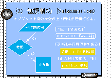

<html>
<head>
<title> Slide No.9 </title>
</head>

<frameset rows="430,130">

<noframes>
<body>
<a href="GIF/slide9.GIF"></a>

<a href="AU/voice9.au">
	</a>[288K]<p>
<!--		-->
次に、<b> Quixote </b> の２番目の特徴として、
<a href=""> 包摂制約(subsumption) </a> を説明します。<p>

<b> Quixote </b> では、包摂制約を用いて、
<a href=""> オブジェクト間の上下関係を定義できます。</a> <p>

包摂制約とは、いわゆる「である」を示す IS Aとか、あるいは、
「の一種」を示す A Kind Of のことです。<p>

例えば、「菱形は平行四辺形である」、「正方形は菱形の一種」は、
それぞれ OHP の黄色の四角に囲まれた部分のように記述できます。<p>
<!--		-->

<hr>
<a href="slide10.html" target="_top">次の OHP へ</a>
<br><br>
<a href="slide8.html" target="_top">前の OHP へ</a>
<br><br>
<a href="HomePage.html" target="_top">OHP の一覧へ</a>
</body>
</noframes>

<frame src="onlyslide9.html">
<frame src="buttonexpla9.html">

</frameset>

</html>
